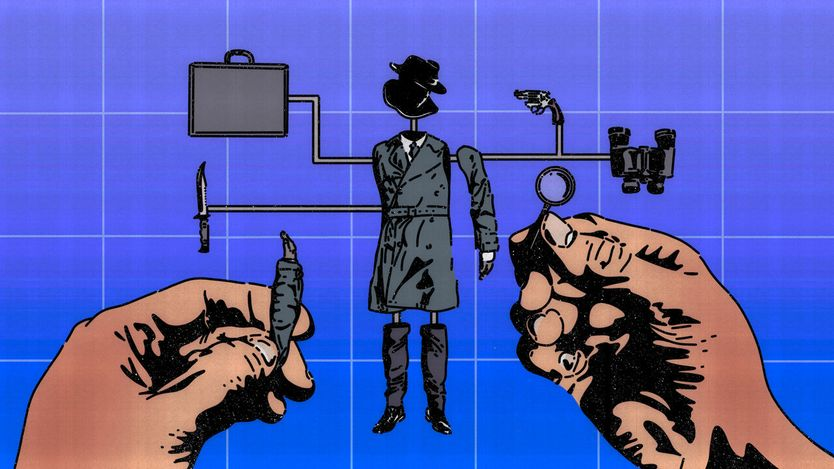
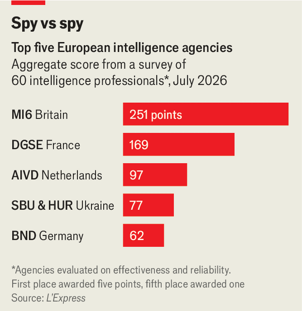

中等强国正在重新思考间谍这门手艺
How middle powers are rethinking espionage
美国的盟友们既要应对俄中威胁——也许还有美国自己

- 背景：2022年俄军进攻基辅前夜，德国对外情报首脑卡哈尔还在基辅等着会见乌克兰领导人——结果次日凌晨4点俄军突进，他靠盟国特工帮忙才从酒店撤出。法、德等欧洲情报机构在那场冷战后最大危机中集体失灵：不信美英的预警，自己又没能力核实。现在，这批「中等强国」正在重建间谍体系。
- 改造清单很长：日本几乎从零打造对外间谍能力（今夏设国家情报会议与国家情报局，还要立反间谍法）；瑞典明年启用新对外情报机构；加拿大在辩论要不要建；德国拟授权情报局境外黑客行动甚至动用非杀伤性强制手段；荷兰拟让特工凭年度授权打击「明显对手」而免逐案审批。
- 深层动因有三个层次：反制俄中情报渗透与「灰色地带」破坏（如莱比锡机场的爆炸无人机）；为俄攻北约、中攻台湾等真实战争储备预警与军事情报；以及最微妙的——防备美国本身。特朗普去年短暂切断对乌情报共享敲响了警钟，至少一个盟国已在制定美国切断情报共享的应急预案。
- 结构性结论：各国既想用情报价值证明自己对美国有用（有人指望日本成为「第六只眼」），也要在美国转身时自保；欧洲「核心小组」已开始按「谁是最强运动员就干哪一段」分工渗透俄中硬目标再共享成果。但欧洲版五眼联盟说易行难——共享越广泄密越快；而对盟友该不该搞情报这一禁忌问题，答案越来越倾向于「会」。
布鲁诺·卡哈尔曾经确信俄罗斯不会入侵。2022年2月23日，这位时任德国对外情报机构首脑抵达基辅，准备会见乌克兰领导人。他没能见到任何人。次日凌晨4点左右，俄军直扑基辅。卡哈尔不得不在盟国间谍的协助下从酒店撤离，在涌向波兰的难民人潮中七弯八绕地脱身。
他身上体现着大多数欧洲情报机构在冷战结束以来最大危机中的无能。法国谍报人员同样搞砸了对入侵的判断，军事情报首脑维多将军因此辞职。他们和其他机构一样，不相信美英关于俄罗斯即将进攻的警告，又缺乏自己核实的手段。
现在不同了——至少他们希望如此。中等规模的民主国家正在为一个更具敌意的世界重塑情报机构。最值得注意的是那些几十年疏于谍报、转而信赖和平主义、中立、地理偏远或山姆大叔的国家。日本几乎在从零开始打造间谍机器。瑞典正在组建一个新的文职对外情报机构。加拿大也在辩论是否照办。德国希望给本国特工更大权限。荷兰准备给自己的间谍更多权力。最重要的是，各国间谍正在与外国朋友更紧密地合作。「欧洲情报机构之间的合作已达到前所未有的水平，」法国对外安全总局（DGSE）局长勒纳尔说。
这场整顿的一个目标是反制专制对手的间谍活动。另一个是遏制俄罗斯的「灰色地带」攻击，比如最近在莱比锡机场发现的载爆无人机。各国还需要对真实战争保持预警——鉴于俄罗斯可能进犯北约、中国可能攻台之忧。而一旦战争真的爆发，各国将需要更好的军事情报。
这一切的底层，是特朗普总统对盟友的轻蔑。他去年（尽管短暂）暂停对乌克兰的情报支持，敲响了警钟。一位前美国情报官员说，至少有一个盟国已在制定美国切断情报共享的应急预案。事实上，鉴于特朗普的贸易战以及他关于吞并加拿大、冰岛和（不久前的）格陵兰的胡思乱想，有人担心美国本身就可能构成直接威胁。

英国曾协助建立「五眼联盟」（美英澳加新五个英语国家的情报共享伙伴关系）成员国的间谍机构，其特工至今仍是受人仰慕的谍报贵族。法国《快报》杂志最近对间谍和专家的调查显示，军情六处（MI6）被评为欧洲最能干的对外情报机构，DGSE次之（见图表）。同行佩服英国把人力情报（线人）与信号情报（监听）及多机构信息融合起来的能力。专注于俄罗斯的那个跨机构团队——有人昵称「俄罗斯之家」（借自勒卡雷的小说名）——尤其受称道。掉队者包括奥地利。
二战结束后，日本把大部分谍报手艺忘掉了。日本特工不能在海外卧底，在国内追查外国间谍时也处处受限。互不统属的机构靠纸质副本临时共享情报。名义上主管它们的内阁情报调查室（CIRO）历来由前国内安全警察军官执掌。一位日本作家曾把它比作家猫， compared with 中央情报局这只「老虎」。
今年夏天，日本成立了国家情报会议（作为整个情报体系的「控制塔」）和国家情报局（CIRO的加强版），以整合来自所有渠道的信息——类似澳大利亚国家情报办公室的角色，后者正协助日本转型。下一步，日本政府想要一个完整建制的对外情报机构，并正在起草新的国内反间谍法，以应对来自中国、俄罗斯和朝鲜日益增长的威胁。以往的尝试因日本帝国时代秘密警察的历史包袱而受阻。
同样被盖世太保与东德史塔西的记忆捆住手脚的德国，其联邦情报局（BND）几乎只是一个豪华智库。前BND官员康拉德说，德国特工不能破门潜入，「针对神职人员、律师、医生或记者的通信监视一直是禁区」。
议会预计本周将辩论改革方案，不仅要强化BND的监视能力，还要让它能「行动」。用BND局长耶格的话说，该机构将能在境外黑客对手、甚至动用「物理手段」（不故意伤人）让敌人「感到疼痛」。康拉德说，如果改革通过，「在一个食肉动物的世界里，我们将从素食者变成也许的弹性素食者。」
与德国一样，瑞典也没预测到俄罗斯的入侵。「现有体系能捕捉能力，但捕捉不到意图，」瑞典前首相卡尔·比尔特说。根据他的建议，瑞典正在组建一个新的对外情报机构，明年开始运作。比尔特解释说，它将综合秘密、商业与公开来源产出国家评估，「把我们的孔径拉宽」。
加拿大众议院一个委员会正在研究本国是否也需要一个专职的对外间谍机构——此前接连受创：2023年一名锡克教活动人士疑似遭印度特工谋杀，以及最近特朗普的敌意，其官员私下威胁要把加拿大踢出五眼联盟。加拿大主要情报机构CSIS主要聚焦国内威胁，在境外搜集人力情报的授权有限。外交部的「全球安全报告项目」也收集一些信息，但其在外交与间谍之间的模糊定位已造成麻烦。
相比之下，荷兰早在2002年就把国内外情报职能合并进了AIVD。「我们必须敏捷快速。这是小国的优势之一，」AIVD总司长西蒙妮·斯米特说。一项法律草案将授权特工每年获得一次许可，即可对「明显对手」采取行动，无需逐案报批。
与重整军备一样，各国加强情报既是为了向美国证明自己的价值，也是在美国转身时保护自己。有分量的情报还能换来别人的一手货。日本大学的小谷贤说，在亚洲，伙伴们会「期待日本搜集有关中国的情报，尤其是人力情报」。有人希望，日本有一天能成为「第六只眼」。
间谍首脑们坚称，即便政治与贸易摩擦加剧，与美国的情报纽带依然牢固。但麻烦的迹象已经出现：从对情报被「政治化」的担忧，到欧洲人承认自己扣留了部分信息。美国情报官员的出走潮，也让维系多年的关系更加困难。
美国情报对盟友仍然至关重要，尤其是对恐怖图谋的预警。前美国情报军官乔伊说，如果合作破裂，「美国会受损，但欧洲人损失更大。」
一些人主张欧洲进一步整合。2024年，芬兰前总统尼尼斯托提议在欧盟层面建立「完整建制的情报合作机构」。荷兰政府和德国国防部长都呼吁搞一个欧洲版五眼联盟。
说易行难。秘密共享得越广，泄密越快。而五眼联盟——70年历史、共同语言、并肩作战与互相窃听的历史——是别人难以复制的。但迫切需求可以压过互不信任，反恐合作就是先例。欧盟情报小组现在综合的成员分析越来越多，尽管布鲁塞尔的地盘之争令人头疼。至于原始情报，前BND副局长弗赖塔格·冯·洛林霍芬说，「在北约或欧盟层面共享几乎不可能。」
欧洲各国对俄罗斯威胁的感知不同，反间谍风险也制约着敏感情报的共享。即便如此，间谍首脑们说，欧洲机构的「核心小组」如今已联手渗透俄罗斯、中国这类硬目标——共享评估、协同行动。「新东西是『共同任务』这个概念，」一位首脑解释说，「我们按谁是最强运动员来分工：我们做这一路，你们做那一路，然后共享结果。」
间谍首脑们对这一切是否终将催生一个欧洲五眼联盟态度暧昧。勒纳尔本人不排除假以时日的可能。倘若成真，英国能否同时身处美式五眼和一个假想的欧洲五眼？
这一切引出一个尴尬的问题：如果美国威胁盟友的安全，盟友该不该对美国搞间谍活动？按惯例，盟友之间不应互相窥探。但2013年，美国国家安全局承包商斯诺登公布该机构的大规模监控计划时，也揭出了美英一直在监听时任德国总理默克尔等人的电话（德国人可能也监听过奥巴马）。特朗普曾抱怨英国政府通信总部窃听他——该机构予以否认。
「除五眼联盟外，我猜大多数国家都对美国有或多或少的情报搜集行动，而在动荡时期这类行动会增加，」一位前美国情报官员说，并指出这类工作很难，「要建立能可靠掌握一国领导人计划与意图的搜集体系，通常需要多年。」
间谍始终是一门不完美的手艺，失手史很长。强大的情报机构也会错得离谱（参见美英2003年对伊拉克的评估）。但面对敌意的俄罗斯、拥核的朝鲜和快速武装的中国，中等强国终于开始建立自己的能力，去判断哪些威胁是真的。